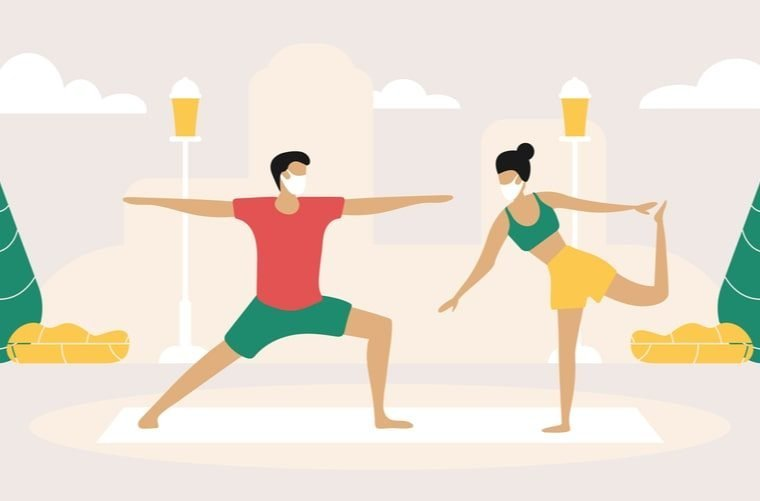

Hobbies
Jugar videojuegos

Los juegos más jugados, usualmente, son: league of legends, genshin impact, overwatch, dead by daylight y brawl stars.
Ver series y películas

Las últimas series y películas vistas son: game of thrones, suits, what if...?, eternals, Anne with an e, el viaje de chihiro, avengers: infinity war y endgame, y spiderman: no way home.
Hacer ejercicio
En los últimos días, hemos estado haciendo una rutina de una hora alternando días.
Escuchar música

Últimamente, hemos estado esuchando a los siguientes artistas: Ariana Grande, Taylor Swift, Jesse y Joy, Dua Lipa, Glass Animals, Daddy Yankee, Bad Bunny, Doja Cat y Christian Nodal.
Salir con amigos

Gracias a la pandemia, no hemos estado saliendo para poder estar libres de covid.